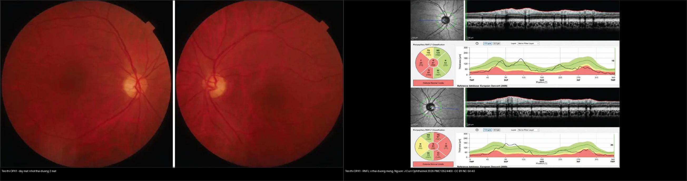
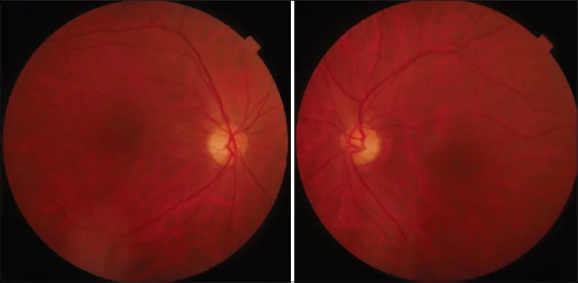
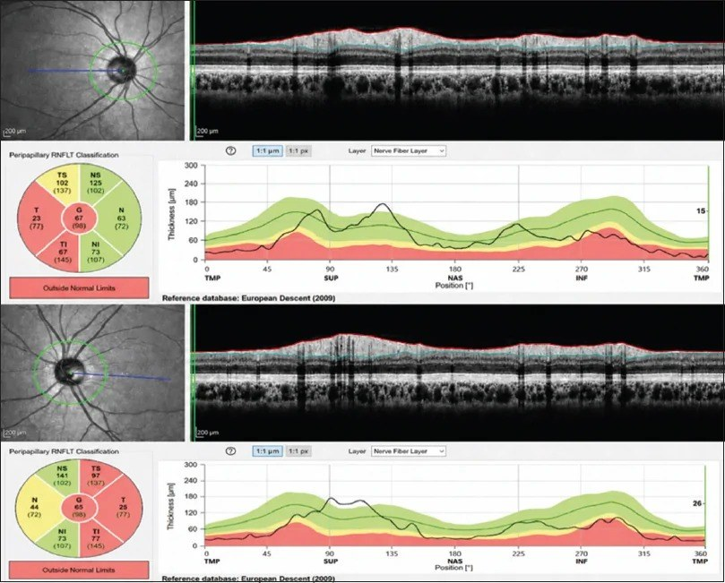
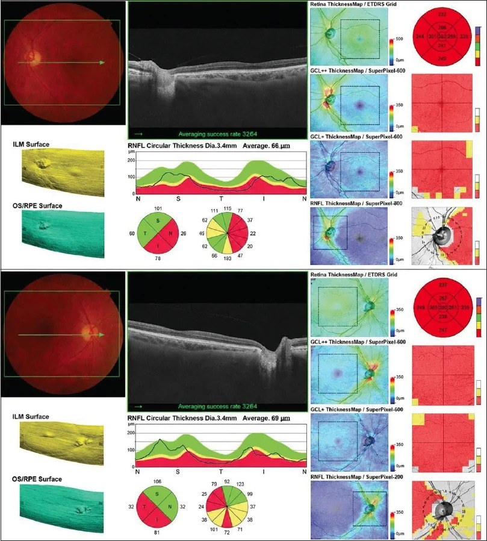
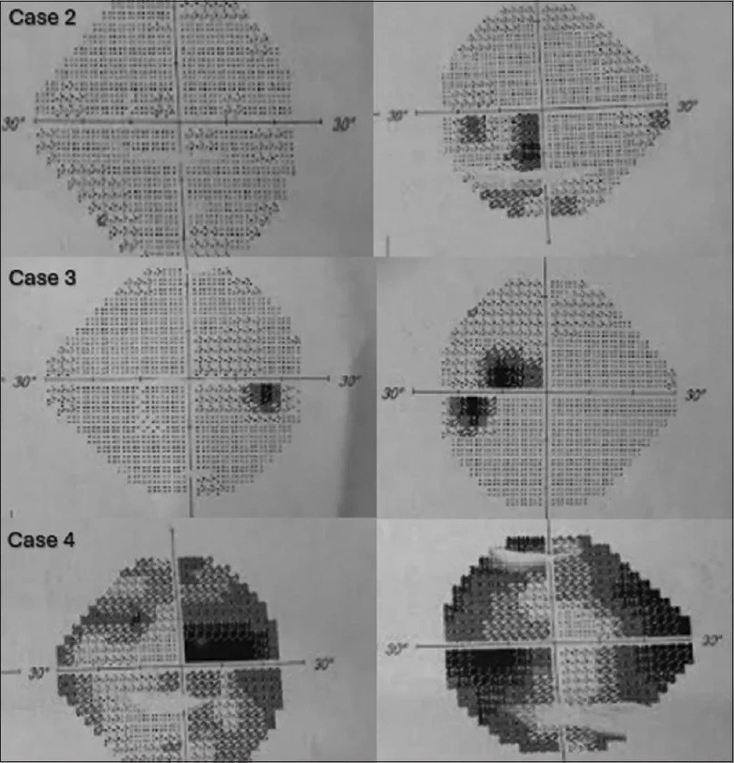
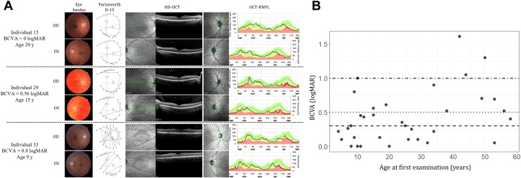
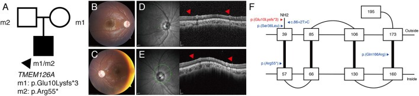
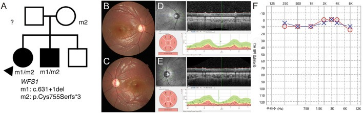
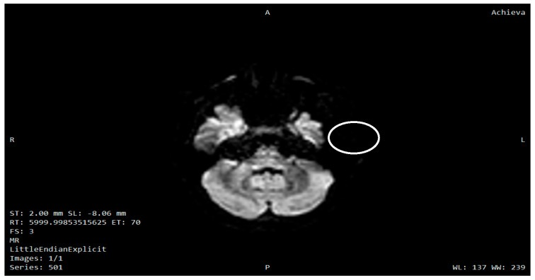
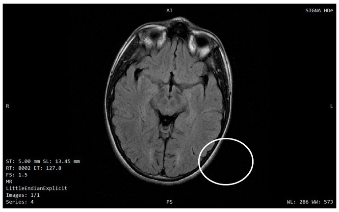

439 — Teo thị di truyền: DOA/OPA1 & Wolfram / Hereditary optic atrophy beyond LHON
Tags: pattern:teo-thi vung:than-kinh-thi score:GCL protocol:OCT-thi-truong protocol:MRI-hoc-mat
Mức chắc chắn (certainty): tổng hợp y văn (literature synthesis) — nhóm tự biên từ 4 nghiên cứu mở (J Curr Ophthalmol 2026 CC BY-NC-SA + Ophthalmology Science 2026 CC BY + Diagnostics 2025 CC BY + Front Neurol 2022 CC BY), chưa gắn ca nguyên văn đơn lẻ.
1. Tổng quan — vì sao sợi trục thị chết, và số nào nằm lòng
- Tế bào hạch võng mạc (retinal ganglion cell, RGC) là neuron có nhu cầu năng lượng cực cao: đoạn sợi trục chưa myelin trong nhãn cầu dài ~1 mm tiêu thụ ATP lớn để chạy bơm ion và vận chuyển sợi trục. Vì thế teo thị di truyền là bệnh của ty thể (mitochondria) hoặc của gene nhân chi phối ty thể — cả LHON (mtDNA), DOA (OPA1) lẫn Wolfram (WFS1) đều quy về chết RGC do mất cân bằng năng lượng nội bào.
- DOA (dominant optic atrophy, teo thị trội trẻ — bệnh Kjer): gene OPA1 (3q29) mã hóa GTPase màng trong ty thể chi phối dung hợp (fusion) và cấu trúc mào ty thể. Đột biến → mạng lưới ty thể phân mảnh → RGC chết theo kiểu chọn lọc bó sợi nhúi hoàng điểm (papillomacular bundle). Di truyền trội (autosomal dominant).
- Wolfram (DIDMOAD): gene WFS1 (4p16.1) mã hóa wolframin ở màng lưới nội chất (ER) — đột biến gây stress ER + chết tế bào ở tế bào beta tụy, thần kinh thị và não; di truyền lặn (autosomal recessive). Bộ tứ: đái tháo đường (DM) + teo thị + đái tháo nhạt (DI) + điếc; ngoài ra thoái hóa thân não–tiểu não.
- TẠI SAO OCT hoàng điểm chốt hơn soi đáy mắt: GCL/GCC là thân tế bào, RNFL là sợi trục. Thân tế bào (GCL) và sợi trục (RNFL) cùng mỏng theo bệnh; trong DOA mỏng chọn lọc ô thái dương của RNFL và GCC/hoàng điểm vì bó nhúi (sợi mảnh, nhiều ty thể) chết trước — soi đáy mắt chỉ thấy nhợt thái dương (temporal disc pallor) ở thì muộn.
- TẠI SAO MRI trong teo thị di truyền: với DOA đơn thuần MRI sọ–ổ mắt thường bình thường (dùng để loại viêm/chèn ép); với Wolfram MRI sọ bắt buộc — thoái hóa cầu não/tiểu não, tăng tín hiệu chất trắng, mất tín hiệu sáng của thùy sau tuyến yên trên T1 khi có ĐTĐ nhạt trung ương (đây là dấu mất tín hiệu mỡ thần kinh trung ương, không phải bệnh thị).
- Số nằm lòng (định lượng):
- DOA là teo thị di truyền hay gặp nhất, ước tính ~1/10.000–1/50.000; khởi phát thời thơ ấu (đa số < 10 tuổi), tiến triển chậm–ẩn.
- Trong một gia hệ DOA lớn nhất đã mô tả (64 người, mất đoạn OPA1 10 kb gồm exon 30–31): thị lực 0 → 1,61 logMAR; mất thị lực trung vị ~0,018 logMAR/năm (0,18 logMAR/thập kỷ); RNFL mỏng thái dương 1,13 µm/năm, trên 0,70, dưới 0,50, mũi KHÔNG đổi (nhóm tác giả, Ophthalmology Science 2026).
- Thể OPA1 c.3011T>C (p.Leu1004Pro): thị lực 0,22–0,82 logMAR, nhợt thái dương + RNFL thái dương mỏng chọn lọc + mất GCC trên võng mạc ngoài nguyên vẹn, không nang (J Curr Ophthalmol 2026).
- Hiệu suất xét nghiệm gene (NGS) teo thị 2 bên: 31,6% (57 gia đình); OPA1 là nguyên nhân trội hàng đầu (n = 7), kế đó NR2F1 (n = 4); nhóm lặn: TMEM126A, NBAS, PTPN23, WFS1. Điểm mấu chốt: hiệu suất 46,2% (18/39) khi khởi phát nhũ nhi/đầu trẻ vs 0% (0/18) khi khởi phát muộn — NGS không đáng làm ở teo thị muộn không rõ nguyên nhân (Front Neurol 2022).
- Wolfram: ước tính ~1/160.000–1/770.000; tuổi khởi phát kinh điển DM ~6 tuổi → teo thị ~11 tuổi → ĐTĐ nhạt ~14 tuổi → điếc ~16 tuổi; 93% bệnh nhân có biểu hiện thần kinh, xuất hiện ~23–26 tuổi, suy giảm nhận thức muộn hơn (29,9 ± 12,2 tuổi).
2. Mẫu hình + chẩn đoán phân biệt theo vị trí (gamut)
- Câu hỏi lọc 1 — thời điểm: nhũ nhi/đầu trẻ (DOA, thể lặn TMEM126A/NBAS, WFS1) · thanh niên 15–35 (LHON — bài 434) · muộn > 50 (thiếu máu NAION, chèn ép).
- Câu hỏi lọc 2 — ngoài mắt: teo thị đơn thuần (DOA, thể lặn) vs teo thị kèm bệnh hệ thống (Wolfram: DM/ĐTĐ nhạt/điếc/thần kinh; OPA3/Costeff: đục thủy tinh thể + acid 3-methylglutaconic niệu; DOA+: điếc, mất điều hòa, bệnh cơ).
- Câu hỏi lọc 3 — tính chất thị trường: ám điểm trung tâm–manh điểm (bó nhúi: DOA, LHON, độc chất) · khuyết trung tâm/trung tâm–manh điểm trong DOA lan rộng ở người lớn tuổi · thu hẹp đồng tâm (teo lan tỏa, teo sau phù).
- Gamut teo thị di truyền: AD (OPA1/DOA, DOA+ cùng OPA1, OPA3, WFS1 thể Wolfram-like) · AR (WFS1 Wolfram, CISD2/WFS2, TMEM126A, NBAS, PTPN23) · X-linked (ổ OPA2, WDR45).
- Gợi nhớ phân loại theo cơ quan bị tổn thương: "M–N–E" — Mitochondria (LHON, OPA1, OPA3) · Nucleus/ER (WFS1, TMEM126A, NBAS) · Extraocular (thần kinh–nội tiết: DM, ĐTĐ nhạt, điếc).
3. Bảng so sánh phân biệt (ma trận đối chiếu)
| Thực thể (entity) | Hình ảnh điển hình | Chốt vào (rule-in) | Chốt loại (rule-out) | Gợi ý xác nhận |
|---|---|---|---|---|
| DOA / OPA1 (trội) | Đĩa nhợt thái dương 2 bên; RNFL thái dương mỏng chọn lọc; mất GCC trên võng mạc ngoài nguyên vẹn; thị trường ám điểm trung tâm–manh điểm | Trẻ, tiến triển chậm–ẩn 2 bên; tiền sử gia đình trội; nhợt thái dương | Đau + ngấm MRI + hồi phục từng đợt → viêm thị | Giải trình tự OPA1 (nhớ MLPA/CNV cho mất đoạn lớn) |
| DOA+ / OPA1 lan tỏa | Teo thị + điếc tiếp âm, mất điều hòa, bệnh cơ ty thể, sụp mi, liệt vận nhãn | Teo thị + ≥1 dấu hiệu thần kinh–cơ | Teo thị đơn thuần → DOA cổ điển | OPA1 + EMG/audiometry |
| Teo thị lặn (TMEM126A/NBAS/PTPN23) | Đĩa nhợt lan tỏa, RNFL mất lan tỏa; có thể kèm tiểu não/chậm phát triển | Bố mẹ không bệnh (lặn), khởi phát sớm, có bệnh toàn thân | Trội + tiền sử gia đình → OPA1 | NGS/panel: TMEM126A, NBAS, PTPN23 |
| Wolfram (WFS1, lặn) | Đĩa nhợt 2 bên; MRI sọ: teo cầu não/tiểu não, tăng tín hiệu chất trắng, mất tín hiệu sáng thùy sau tuyến yên T1; mất phản xạ hầu (67%) | Teo thị + DM trẻ + ĐTĐ nhạt ± điếc; bộ tứ DIDMOAD | Teo thị đơn thuần, không nội tiết → DOA | WFS1; glucose/HbA1c, copeptin, audiometry |
| Wolfram-like (WFS1 trội) | Teo thị + điếc ± DM nhẹ hơn, thường trội | Teo thị + điếc + tiền sử trội | Bộ tứ đầy đủ + lặn → Wolfram kinh điển | WFS1 (biến thể AD); phân biệt bằng phả hệ |
| OPA3 / Costeff | Teo thị + đục thủy tinh thể; kèm acid 3-methylglutaconic niệu | Teo thị + đục thủy tinh thể sớm | Không đục TTT, không rối loạn chuyển hóa | OPA3 + acid hữu cơ niệu |
| LHON (bài 434) | Giả phù đĩa sớm; GCL mất 0–45 ngày khi RNFL còn phù; RNFL giảm nặng sau 120 ngày | Nam 15–35, 2 bên, không đau, dòng mẹ | Đĩa nhợt thái dương tiến triển chậm → DOA | mtDNA m.11778/14484/3460 |
| Độc–chuyển hóa (bài 434) | RNFL thái dương mỏng; tiền sử thuốc/thiếu dinh dưỡng | Ethambutol > 15 mg/kg/ngày, thiếu B12, rượu–thuốc lá | Không phơi nhiễm, trội/lặn rõ → di truyền | Ngưng thuốc; B12, homocysteine/MMA |
| Viêm thị | Ngấm cản quang + T2 sáng TK thị; đau khi liếc (bài 430) | Đau + ngấm MRI + hồi phục từng đợt | Không đau/không ngấm, tiến triển đều → di truyền | AQP4/MOG; MRI não–tủy |
| Chèn ép giao thoa | Bán manh 2 thái dương + teo dải băng đĩa (bài 431/432) | Bán manh 2 thái dương + khối trên MRI | Ám điểm trung tâm đơn thuần → không phải giao thoa | MRI yên/giao thoa có tiêm |

Trái: đáy mắt 2 mắt — đĩa nhợt ưu thế thái dương. Phải: bản đồ RNFL — ô thái dương (T) mỏng chọn lọc trong khi các ô khác còn tốt, đúng chân dung "teo bó nhúi" của DOA/OPA1 (J Curr Ophthalmol 2026, PMC13524400 Fig. 2 & 3, CC BY-NC-SA 4.0). Ảnh ghép letterbox.Quiz composite: che 2 nhãn, hỏi vì sao cùng một bệnh mà đáy mắt chỉ "hơi nhợt" còn RNFL lại mất chọn lọc ô thái dương? Di truyền kiểu gì?
Bấm để hiện đáp án
- Di truyền TRỘI (OPA1/DOA): bó nhúi (sợi mảnh, mật độ ty thể cao) chết trước → nhợt thái dương + RNFL ô T mỏng chọn lọc, các ô mũi/trên/dưới còn tương đối.
- Cần: giải trình tự OPA1, tư vấn trội 50%, sàng lọc người thân; nhớ MLPA/CNV vì mất đoạn lớn (như mất đoạn 10 kb exon 30–31) có thể lọt giải trình tự thường.
- Đối chiếu: teo thị do độc–chuyển hóa cũng mỏng ô thái dương nhưng có tiền sử thuốc/dinh dưỡng và không có phả hệ trội (bài 434).
Vì sao "teo thị trội" của trẻ lại nhợt ở THÁI DƯƠNG — không phải toàn đĩa
- Bó sợi nhúi vào đĩa ở phía thái dương chứa sợi trục mảnh nhất, nhiều ty thể nhất → nhạy nhất với thiếu năng lượng (OPA1) → nhợt thái dương + mỏng RNFL thái dương là dấu sao.
- Khi bệnh lan rộng/ở người lớn tuổi, nhợt có thể lan toàn đĩa và thị trường xấu thêm — đừng loại DOA chỉ vì nhợt lan rộng.
4. Protocol chụp + hệ điểm chuẩn hóa
- Khám nền (bắt buộc): thị lực (logMAR), thị giác màu Lanthony D-15 / Ishihara (DOA: rối loạn xanh–vàng/tritan; LHON: đỏ–xanh), thị trường tự động 24-2, phản xạ đồng tử (RAPD — có thể âm vì 2 bên đối xứng), soi đáy mắt.
- OCT (chốt cấu trúc): vòng RNFL quanh đĩa + GCC/GCL hoàng điểm — ghi µm theo ô và theo bản đồ theo tuổi (normative database); theo dõi RNFL thái dương (mỏng ~1,13 µm/năm) và GCC.
- Điện sinh lý: VEP (tăng thời gian tiềm tàng) + ERG khi cần phân biệt bệnh võng mạc; đo thị giác màu.
- MRI: DOA đơn thuần → loại viêm/chèn ép (T1 fat-sat sau tiêm + T2 fat-sat, bài 430). Nghi Wolfram → MRI sọ + tuyến yên: tìm mất tín hiệu sáng thùy sau tuyến yên T1, thoái hóa cầu não/tiểu não, tăng tín hiệu chất trắng.
- Xét nghiệm gene (quy trình):
- Khởi phát nhũ nhi/đầu trẻ (hiệu suất NGS cao) → panel teo thị/NGS: OPA1 trước; âm tính → MLPA/CNV (bắt mất đoạn lớn); nhóm lặn: TMEM126A, NBAS, PTPN23, WFS1; X-linked: locus OPA2/WDR45.
- Khởi phát muộn không rõ nguyên nhân → NGS giá trị thấp (0%), ưu tiên tìm nguyên nhân mắc phải (độc chất, thiếu máu, chèn ép).
- Nghi LHON → mtDNA (bài 434); nghi Wolfram → WFS1 + xét nghiệm nội tiết.
- Tầm soát ngoài mắt khi nghi Wolfram: glucose/HbA1c/OGTT, nghiệm pháp nhịn nước + copeptin (ĐTĐ nhạt trung ương), audiometry, siêu âm/niệu động học (bàng quang thần kinh), đánh giá thần kinh/cognitve định kỳ (xuất hiện ~23–26 tuổi, nhận thức muộn hơn 29,9 ± 12,2 tuổi).
- Tư vấn: DOA/Wolfram-like = trội (50%); Wolfram = lặn (25%), tầm soát anh chị em + tư vấn di truyền; LHON = dòng mẹ (bài 434).
flowchart TD
A[Teo thi 2 ben nghi di truyen] --> B{Tuoi khoi phat}
B -->|Nhu nhi - dau tre| C{Co benh ngoai mat?}
B -->|Thanh nien 15-35| D[Nghi LHON - mtDNA 11778/14484/3460]
B -->|Muon - khong ro| E[Uu tien nguyen nhan mac phai: doc chat/thieu mau/chen ep - NGS it gia tri]
C -->|Khong: chi mat| F[DOA/OPA1 - giai trinh tu OPA1; am tinh thi MLPA/CNV]
C -->|Co| G{Bo tu DIDMOAD? DM + DTDT nhat + diec}
G -->|Co| H[Wolfram WFS1 - MRI so tuyen yen + noi tiet + audiometry]
G -->|Khong| I{Costeff/OPA3? duc thuy tinh the hoac acid 3-MGA}
I -->|Co| J[OPA3/Costeff - acid huu co nieu]
I -->|Khong| K[Nhom lan: TMEM126A/NBAS/PTPN23 - panel NGS]
5. Biến thể bình thường và cạm bẫy
- RNFL mỏng theo tuổi (~0,2 µm/năm sinh lý) — luôn so bản đồ theo tuổi/normative, đừng gọi teo bệnh lý khi lệch nhẹ.
- Nhãn "teo thị vô căn/do tuổi" dễ bỏ sót DOA trẻ, Wolfram, độc chất: luôn hỏi phả hệ (trội/lặn/dòng mẹ) + thuốc (ethambutol, linezolid, amiodarone) + DM/điếc/khát nhiều.
- Mất đoạn lớn OPA1 lọt giải trình tự — gia hệ DOA lớn nhất từng bị bỏ sót nếu chỉ sequencing; luôn thêm MLPA/CNV khi OPA1 âm tính mà chân dung vẫn trội.
- "Teo thị trội = lành, nhẹ" là sai: mất thị lực có thể tới 1,61 logMAR, tiến triển ~0,18 logMAR/thập kỷ — cần theo dõi và phục hồi chức năng.
- Wolfram có thể bắt đầu bằng teo thị trước khi có DM/điếc → đừng gạt chẩn đoán khi chưa đủ bộ tứ; theo dõi nội tiết theo thời gian.
- Đừng nhầm mất tín hiệu sáng thùy sau tuyến yên (dấu ĐTĐ nhạt trung ương) với tổn thương thị — hai điều khác nhau, cùng trên một MRI Wolfram.
- RAPD âm không loại trừ — vì 2 mắt tổn thương đối xứng, như trong DOA.
6. Tự lượng giá — Blind Quiz
Ca 1 — Bé 9 tuổi, bố cũng mờ mắt từ nhỏ; thị lực giảm dần 2 bên KHÔNG đau. Đáy mắt:

- Hỏi: mẫu nhợt ưu thế vùng nào? Kiểu di truyền? Xét nghiệm đầu tay?
Bấm để hiện đáp án (findings + chẩn đoán)
- Dấu hiệu (findings): đĩa thị nhợt ưu thế thái dương 2 mắt; bờ đĩa còn rõ (không phù) — "teo bó nhúi".
- Chẩn đoán (diagnosis): DOA/OPA1 (teo thị trội trẻ) — vì trẻ, 2 bên, không đau, tiến triển chậm, tiền sử gia đình trội.
- Xét nghiệm: giải trình tự OPA1 (âm tính → MLPA/CNV); tư vấn trội 50%, sàng lọc người thân.
- Nguồn ảnh: J Curr Ophthalmol 2026 (PMC13524400) Fig. 2, CC BY-NC-SA 4.0.
Ca 2 — Cùng bệnh nhân, OCT quanh đĩa + GCL/GCC + thị trường:



- Hỏi: ô nào mỏng nhất (RNFL)? GCL/GCC mất ở đâu? Thị trường khuyết kiểu gì? Nếu ô mũi cũng mỏng đều thì nghĩ gì?
Bấm để hiện đáp án (findings + chẩn đoán)
- Dấu hiệu (findings): ô thái dương (T) mỏng chọn lọc trên RNFL (classification "outside normal limits" vùng thái dương); GCC/GCL mất vùng thái dương–hoàng điểm; thị trường ám điểm trung tâm/trung tâm–manh điểm ("có/khuyết trung tâm"), giai đoạn muộn lan thêm.
- Vì sao: bó nhúi hoàng điểm (thái dương) gồm sợi mảnh, mật độ ty thể cao → nhạy thiếu năng lượng → chết trước; thân tế bào (GCL) và sợi trục (RNFL) cùng mỏng, khớp thị trường.
- Nếu mỏng lan tỏa cả ô mũi → cân nhắc teo thị lặn (TMEM126A/NBAS) hoặc teo muộn lan rộng — mở rộng panel gene.
- Nguồn ảnh: J Curr Ophthalmol 2026 (PMC13524400) Fig. 3, 4, 7, CC BY-NC-SA 4.0.
Ca 3 — Ba người trong cùng gia hệ DOA (OPA1), mức độ rất khác nhau. Đọc hàng đầu → hàng cuối:

- Hỏi: tại sao cùng một đột biến mà người nhẹ 0 logMAR, người nặng 1,61 logMAR? Điều này ảnh hưởng tư vấn thế nào?
Bấm để hiện đáp án (findings + chẩn đoán)
- Dấu hiệu (findings): từ trên xuống — người 15 tuổi 0 logMAR (đáy mắt gần bình thường, RNFL còn tốt) → 29 tuổi 0,56 logMAR → 33 tuổi 0,8 logMAR (nhợt + RNFL mỏng rõ); phả hệ kèm thị lực giảm theo tuổi.
- Cơ chế: biểu hiện biến thiên trong cùng gia hệ (variable expressivity) — thị lực tương quan với độ dày RNFL/GCL, tương quan yếu với tuổi; mất ~0,018 logMAR/năm.
- Tư vấn: không hứa "nhẹ" cho con dù cha mẹ nhẹ; theo dõi định kỳ; nhớ MLPA/CNV (gia hệ này do mất đoạn 10 kb exon 30–31).
- Nguồn ảnh: Ophthalmology Science 2026 (PMC13382307) Fig. 3, CC BY 4.0.
Ca 4 — Bé gái 11 tuổi, bố mẹ KHÔNG bệnh, teo thị 2 bên lan tỏa, không đau, không bệnh nội tiết. Ảnh:

- Hỏi: kiểu di truyền? Xét nghiệm nào? Vì sao khác DOA?
Bấm để hiện đáp án (findings + chẩn đoán)
- Dấu hiệu (findings): đáy mắt nhợt lan tỏa 2 bên; OCT mất RNFL nặng lan tỏa; phả hệ có bố mẹ mang dị hợp ghép (compound heterozygous).
- Chẩn đoán (diagnosis): teo thị lặn (AR) do TMEM126A — di truyền lặn (bố mẹ không bệnh), khởi phát sớm, thường không kèm bệnh ngoài mắt.
- Xét nghiệm: panel/NGS (TMEM126A, NBAS, PTPN23); tư vấn lặn 25%.
- Nguồn ảnh: Front Neurol 2022 (PMC9441910) Fig. 3, CC BY 4.0.
Ca 5 — Trẻ teo thị 2 bên kèm đái tháo đường và NGHE KÉM (audiogram). Ảnh đáy mắt + OCT + thính lực:

- Hỏi: hội chứng nào? Bộ tứ? Xét nghiệm bổ sung ngoài gene?
Bấm để hiện đáp án (findings + chẩn đoán)
- Dấu hiệu (findings): đĩa nhợt 2 bên + RNFL mỏng + audiogram mất nghe; phả hệ lặn (bố mẹ mang biến thể ghép
c.631+1del/p.Cys755Serfs*3). - Chẩn đoán (diagnosis): Wolfram syndrome (WFS1) — bộ tứ DIDMOAD: đái tháo đường + teo thị + đái tháo nhạt + điếc; ở ca này đã lộ DM + điếc + teo thị.
- Bổ sung: copeptin/nhịn nước (ĐTĐ nhạt), MRI sọ–tuyến yên, niệu động học, theo dõi thần kinh (xuất hiện ~23–26 tuổi).
- Nguồn ảnh: Front Neurol 2022 (PMC9441910) Fig. 4, CC BY 4.0.
Ca 6 — Cùng bệnh nhân Wolfram, MRI sọ:


- Hỏi: tổn thương ở đâu? Vì sao MRI sọ cần cho teo thị di truyền nghi Wolfram?
Bấm để hiện đáp án (findings + chẩn đoán)
- Dấu hiệu (findings): DWI tăng tín hiệu vùng thân não (cầu não) (vòng tròn) và FLAIR tăng tín hiệu chất trắng trên lều — chân dung thoái hóa thần kinh của Wolfram.
- Vì sao MRI sọ: phân biệt teo thị đơn thuần (DOA) với bệnh thoái hóa thần kinh trung ương; ở Wolfram, 93% bệnh nhân có biểu hiện thần kinh, khởi phát ~23–26 tuổi, suy giảm nhận thức muộn hơn (29,9 ± 12,2 tuổi).
- Nguồn ảnh: Diagnostics 2025 (PMC12732145) Fig. 2–3, CC BY 4.0. (Lưu ý phản biện: hình chỉ mô tả đại thể theo chú thích nguồn; đối chiếu thêm chuỗi xung trước khi chốt vị trí từng ổ.)
Bài liên quan chéo
- 400 – Tổng quan Mắt
- 434 – Teo thị do độc–chuyển hóa & LHON (LHON dòng mẹ; GCL/RNFL lệch pha)
- 430 – Đường thị giác: viêm vs NAION (loại viêm/thiếu máu)
- 431 – U TK thị · 432 – Vùng yên (chèn ép — bán manh 2 thái dương)
- 433 – Phù đĩa thị vs drusen (giả phù vs phù thật)
- 442 – Glaucoma OCT (RNFL/GCL mỏng — so cơ chế)
- 456 – Bệnh võng mạc trẻ sinh non (mắt nhi — nhóm tân mạch/bong)
Ảnh
439_OPA1-do-day-mat-nhot_Fundus_PMC13524400-Fig2.jpg,439_OPA1-RNFL-thai-duong-mong_OCT_PMC13524400-Fig3.jpg,439_OPA1-GCL-mat_OCT_PMC13524400-Fig4.jpg,439_OPA1-am-diem-trung-tam_TVF_PMC13524400-Fig7.jpg,composite_teo-thi-di-truyen_OPA1-day-mat-vs-RNFL.jpg— J Curr Ophthalmol 2026 (PMCID: PMC13524400), CC BY-NC-SA 4.0.439_OPA1-do-nang-bieu-hien_Fundus-OCT_PMC13382307-Fig3.jpg— Ophthalmology Science 2026 (PMCID: PMC13382307), CC BY 4.0.439_Wolfram-cau-nao-DWI_MRI_PMC12732145-Fig2.jpg,439_Wolfram-chat-trang-FLAIR_MRI_PMC12732145-Fig3.jpg— Diagnostics 2025 (PMCID: PMC12732145), CC BY 4.0.439_teo-thi-lan-TMEM126A_Fundus-OCT_PMC9441910-Fig3.jpg,439_Wolfram-WFS1_Fundus-OCT_PMC9441910-Fig4.jpg— Front Neurol 2022 (PMCID: PMC9441910), CC BY 4.0.- Chi tiết giấy phép từng ảnh trong
images/CREDITS.md. AuntMinnie: chỉ dẫn link, không tải.
Không dùng để chẩn đoán độc lập khi chưa có người hướng dẫn.